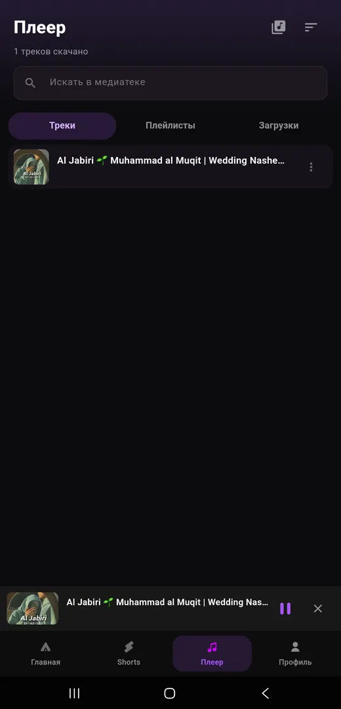
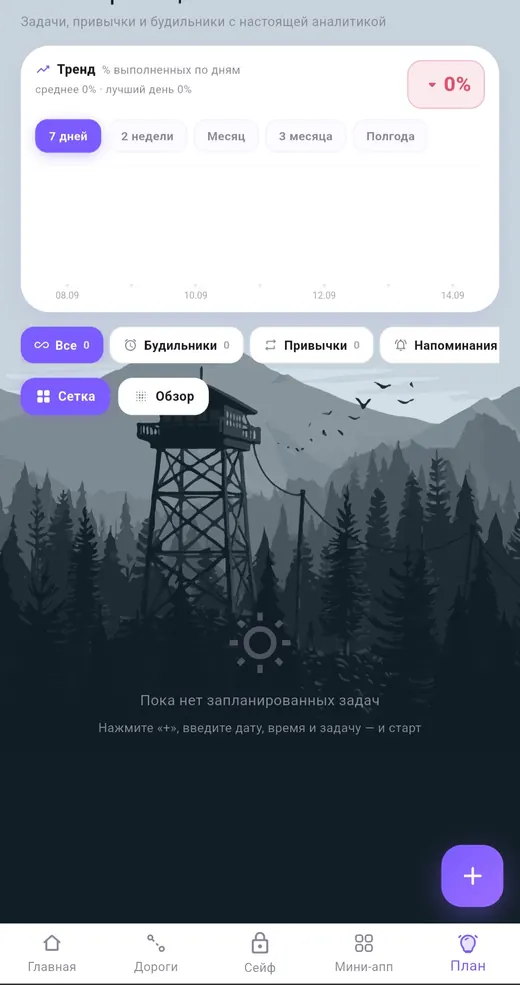
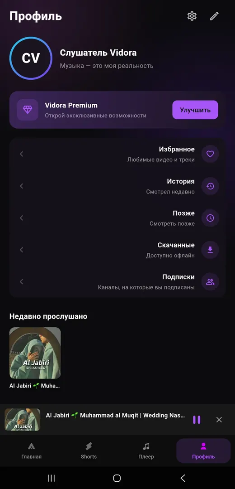
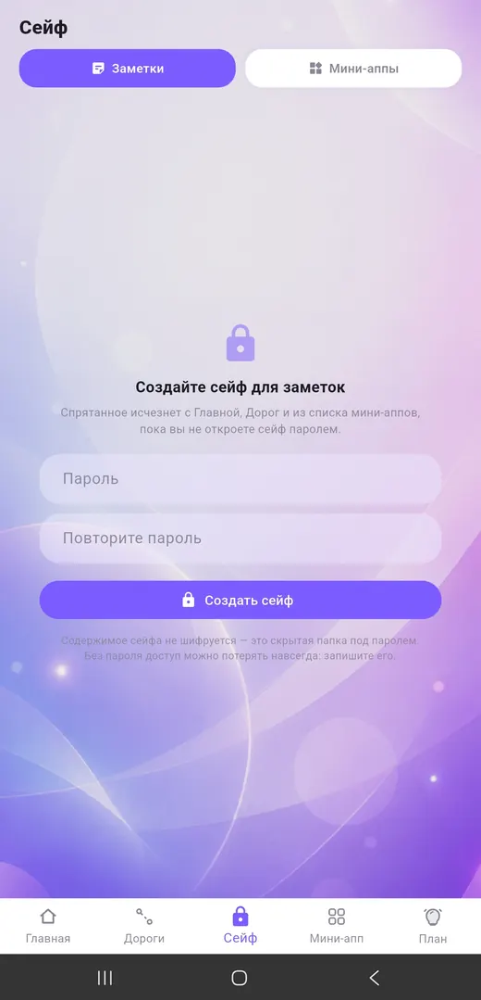
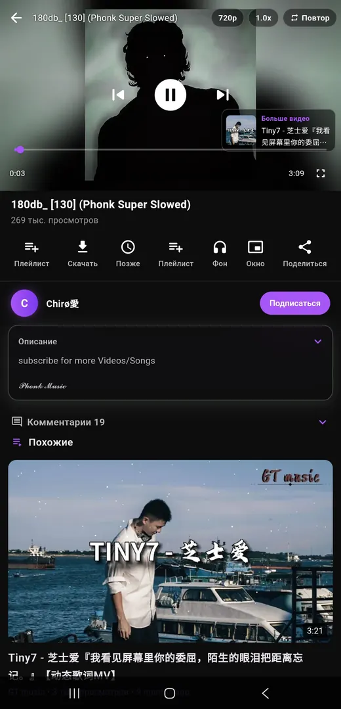
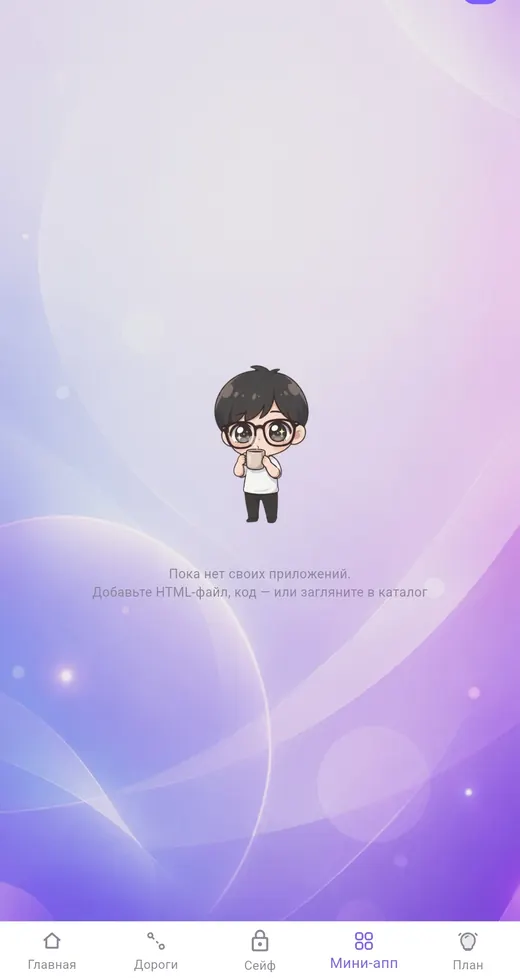

Vidora
[mobile]
An alternative video client focused on a clean viewing experience, background playback and a native-feeling mobile interface.
FlutterAndroidMedia playbackUI / UX

I design and build digital products with a focus on mobile experiences, clean interfaces and details that make software feel finished.
04 projects · Flutter main stack · 2026
Products and developer tools I design and build.

An alternative video client focused on a clean viewing experience, background playback and a native-feeling mobile interface.

A location-based game concept where players capture zones, move around the city and compete through territory.

A library / engine project presented as a focused alternative to the existing NewPipe-oriented extraction ecosystem.

The renamed and redesigned successor to ONION — a notes and knowledge product with a new identity and updated screens.
Selected interface screens. Swipe on mobile.







I care about the whole product: interface, architecture, performance and the small interactions people notice. The goal is not to fill a portfolio with experiments — it is to keep a small set of projects moving forward and make each version better.